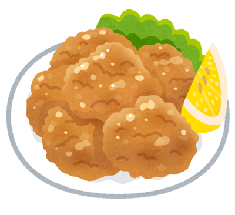

General Gau’s Chicken: A Chinese-American Legend

The General Who Never Ate It
General Tso s chicken (左宗棠雞, also known as General Gau s or General Tao s chicken) is named after Zuo Zongtang (1812–1885), a celebrated Qing Dynasty military leader from Hunan Province. Despite the dish bearing his name, there is no evidence that General Zuo ever ate — or even knew about — the dish. The connection is purely honorific, a tribute to Hunan s most famous son.
The dish was created by Chef Peng Chang-kuei (彭長貴), a Hunanese chef who fled to Taiwan after the Chinese Civil War. In the 1950s, he developed a braised chicken dish seasoned with Hunanese chili peppers and named it after the general. When Chef Peng later moved to New York City in 1973, he adapted the recipe to suit American tastes — making it sweeter, crispier, and more heavily sauced.
The Chinese-American Transformation
The version that conquered America bears little resemblance to its Hunanese ancestor. The original was a savory, lightly sauced dish with dried chili peppers and no sugar. The American version features deep-fried chicken pieces coated in a glossy, sweet-tangy sauce of soy, vinegar, sugar, garlic, ginger, and dried red chilies, garnished with broccoli and served over steamed rice.
This transformation is not a betrayal — it is a chapter in the larger story of Chinese-American cuisine, a tradition with over 170 years of history. Chinese immigrants adapted their cooking to local ingredients and American palates, creating an entirely new culinary tradition that is now studied and celebrated in its own right.
Hunan Cuisine: The Source
The dish s roots lie in Hunan cuisine (湘菜), one of China s Eight Great Traditions. Hunanese cooking is known for its pure, intense heat — unlike Sichuan s numbing mala, Hunan relies on fresh and dried chili peppers for a straightforward, fiery burn. The province s humid, subtropical climate makes spicy food a natural companion.
Authentic Hunanese cooking values suan la (sour-spicy) flavors, smoking and curing techniques, and the bold use of garlic, shallots, and fermented black beans. If General Tso had tasted his namesake dish in its original form, he would have recognized it as unmistakably Hunanese.
Global Impact
General Tso s chicken became the best-selling dish in Chinese restaurants across North America by the 1980s. The 2014 documentary The Search for General Tso explored how the dish became a cultural bridge, introducing millions of Americans to Chinese food — even if the version they fell in love with was uniquely American.
In Japan, a similar dish appears on Chinese restaurant menus as yurinchi (油淋鶏) — deep-fried chicken with a tangy vinegar-soy sauce. While not identical, it shares the same spirit: crispy fried chicken elevated by a bold, balanced sauce.

General Tso s chicken reminds us that great food has no passport. A Hunanese chef, a Taiwanese kitchen, and an American appetite created something that belongs to no single place — and to all of them at once.